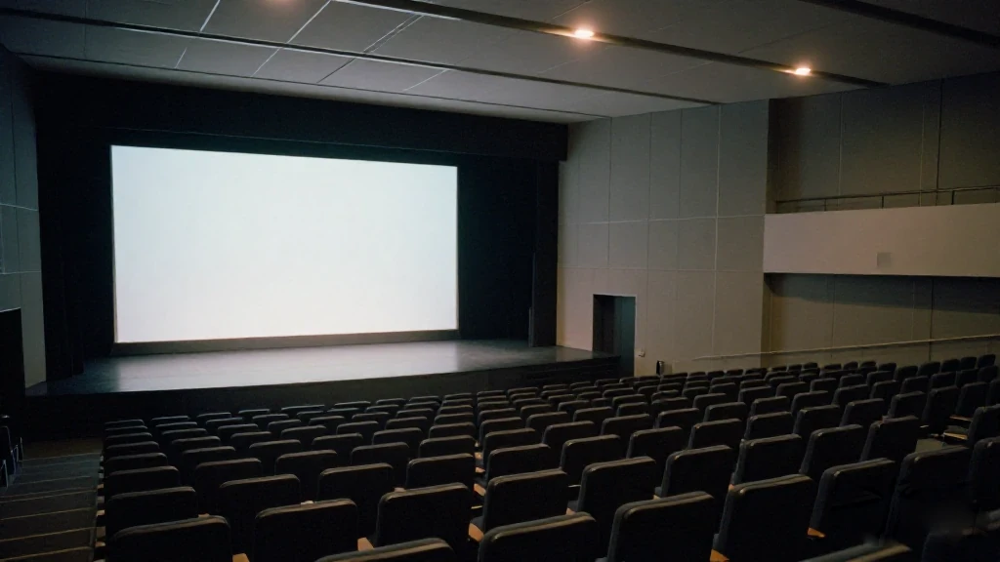
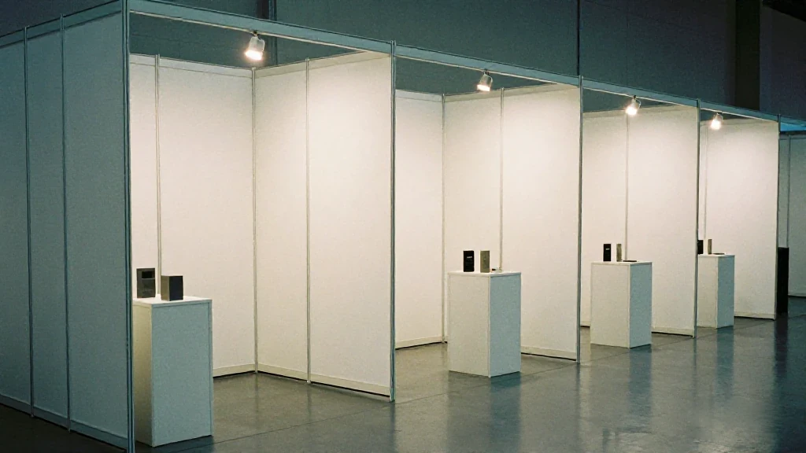
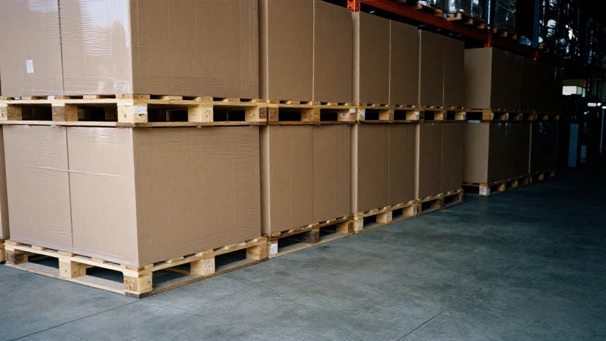

圖片由 AI輔助創作（Z-Image-Turbo）Image by AI (Z-Image-Turbo)
【鄭哥點評】
10月16日，廣交會堂。2026珠江國際貿易論壇，今年係廣交會創辦70周年——1957年到2026年，第140屆。台上坐咗五個人，台下坐滿展商同採購商。
中國社科院大學教授江小涓喺台上講咗一句：「這條路正在被改寫。」佢幫呢條新路改咗個名，叫「原生全球化」。意思係：過去嘅企業係「先國內、後海外」，國內市場做透先往外走；而家唔少技術、產品、服務，由誕生第一日就盯住全球市場，AI 將呢個節奏徹底打亂咗。
佢俾企業嘅建議係三句：樹立全球視野、塑造可信品牌、同步適配國際高標準合規體系。聽落好正路，但我做咗26年生意，知道呢三句對大部分外貿企業嚟講，係三座山。
同一個台上，另外四個人講嘅，其實係同一件事。我睇到嘅係一個轉向：由賣產品，轉去賣能力。
第一幕：台上五個人，講嘅係同一件事
圖片由 AI輔助創作（Z-Image-Turbo）Image by AI (Z-Image-Turbo)
格力電器副總裁朱磊講得最直接：「客商來廣交會，不只是來找訂單，更是來找價值共鳴的夥伴。」佢舉咗個例子：格力喺巴西嘅工廠，本土員工佔 98%。佢原話係——「不是把中國工人派過去，是讓品牌長在當地社會裡。」
小米集團國際業務部副總裁蔣聰講嘅係另一層：佢哋賣嘅唔係手機手錶，係整套技術體系、產業生態同持續服務。呢種生意冇辦法靠一次展會成交，得靠硬核技術、合規經營同持續本地化投入，一點點攢出信任。
安永華南區主管合夥人黃寅講得最抽象，但最準：全球化由「集中效率型分工」，變成「多元網絡化經營」；中國企業出海，已經由賣商品，變成賣研發、賣供應鏈、賣運營管理——由「產品出海」到「能力出海」。
仲有一個講者，講咗一句我記住嘅話。雪華鈴電器董事總經理 Can Yildirim，喺中國三十年嘅採購商，佢話合作嘅未來唔係誰壓價、誰接單，而係「價值共創」——一齊定義產品方向，一齊挖終端用戶嘅真實需求。
五個人，五種身份：學者、廠家、品牌、會計師、採購商。講嘅都係同一件事——買賣雙方嘅關係，正在由「交易」變成「共創」。
第二幕：數字同一個爵仕，證實同一件事

圖片由 AI輔助創作（Z-Image-Turbo）Image by AI (Z-Image-Turbo)
唔止台上咁講，數字都係咁講。第140屆廣交會，新品首發活動超過700場，首發數量增長15%，同時首次設立新品首發展示區；第一次喺貿易服務展區做到10大類生產性服務業全覆蓋；第一次推出境外採購商會員服務，積分制，權益延伸到出行、住宿、支付。
到會嘅境外採購商大約34萬名，共建「一帶一路」國家嘅採購商報名踴躍。消費品、中間品、資本品嘅佔比分別係 56.6%、30.7%、17.3%。仲有22個智慧應用場景同16項AI特色應用首次推出；全實景展位級導航精度做到1米，覆蓋超過7.5萬個展位。
呢啲數字裡面，我最留意最後兩個。導航精到1米、覆蓋7.5萬個展位——呢個係「效率」嘅投資。22個智慧場景、16項AI應用——呢個係「能力」嘅展示。廣交會自己都喺度由「擺貨」走向「展示能力」。
家居建材係一個現成嘅例子。過去係賣單品、拼價格；而家由「全屋定制」走到「裝配式空間」，由「智能衛浴」走到「健康家居」，由「國內生產」走到「海外設廠經營」。代表係廣東爵仕：喺澳洲墨爾本設獨資工廠、新西蘭開直營店，「國內生產、全球銷售、本地服務」，產品覆蓋100個國家和地區。
本質嘅變化係一句：由「賣一件產品」，變成「交付一個空間」。用場景化方案提升客單價同附加值，由「中國製造」行向「中國智造」。
第三幕：賣產品嘅紅利用完，AI 令能力藏唔住

圖片由 AI輔助創作（Z-Image-Turbo）Image by AI (Z-Image-Turbo)
第一條主線：賣產品嘅時代紅利，已經消失。靠價格競爭、靠單品出貨嘅年代過去了。採購商而家搵嘅，係可以一齊定義產品方向、一齊挖終端需求嘅夥伴。只會報價嘅供應商，排喺最容易被替換嘅位置。
我做外貿嗰陣，一張報價單就可以開檔。而家報價單係入場券，唔係武器。
第二條主線：AI 加速咗呢個過程。AI 將「能力複製」嘅門檻降低咗，同時將「能力展示」嘅透明度提高咗。品牌有冇可信度、供應鏈有冇深度、數據有冇積累——呢啲以前靠資訊不對稱可以藏住嘅嘢，而家一目了然。
我睇到嘅係：以前外貿靠「我知你唔知」賺差價，而家採購商打開幾個 AI 就查到七七八八。藏唔住嘅，就只能做出嚟。
第四幕：GEO 只係內容工具，唔係萬能
圖片由 AI輔助創作（Z-Image-Turbo）Image by AI (Z-Image-Turbo)
第三條主線同我自己做緊嘅事有關：GEO。我盡量講得平實啲。
廣交會上嘅變化，已經延伸到線上。採購商嚟廣交會之前，已經喺用豆包、DeepSeek、ChatGPT 搜供應商同方案。你嘅品牌喺呢啲 AI 平台嘅回答裡面唔出現，連被考慮嘅機會都冇。
但我睇到嘅係：GEO 係內容工具，唔係魔法。它決定嘅係「有冇人喺 AI 嘅答案裡面見到你」；見到之後信唔信你，仍然係靠你嘅產品、交付同記錄。工具解決曝光，解決唔到信任。
所以我唔會話 GEO 係出路。出路仍然係台上嗰五個人講嘅嘢：能力、本地化、合規、共創。GEO 只係令呢啲能力被睇見嘅一條渠道。
70歲嘅廣交會喺變，外貿企業嘅打法都要跟住變——由拼價格，到拼信任，到拼 AI 時代嘅可見性。呢三樣，一樣都唔可以少。
資料來源：綜合南方網、21經濟網報道（經今日頭條轉載），2026年10月18日。本文只引用該報道公開陳述的事實及與會者嘅公開發言，其餘為鄭哥的個人觀察。
圖片由 AI輔助創作（Z-Image-Turbo）Image by AI (Z-Image-Turbo)
[Zheng Ge's Take]
On 16 October, in the Canton Fair hall. The 2026 Pearl River International Trade Forum, in the year the fair turns seventy — 1957 to 2026, the 140th session. Five people on the stage, a room full of exhibitors and buyers below it.
Jiang Xiaojuan, a professor at the University of the Chinese Academy of Social Sciences, put it in one line: "This road is being rewritten." She gave the new road a name — native globalisation. Her point was that companies used to go domestic first and overseas later, working the home market through before stepping out; today a good deal of technology, product and service is aimed at the global market from the day it is born, and AI has scrambled that rhythm completely.
Her advice to companies came in three parts: build a global outlook, build a credible brand, and line up with international compliance standards from the start. It sounds reasonable, and after twenty-six years in business I know that for most exporters those three are three mountains.
The other four people on that stage were talking about the same thing. What I saw was a turn: from selling products to selling capability.
Act One: Five Speakers, One Point
圖片由 AI輔助創作（Z-Image-Turbo）Image by AI (Z-Image-Turbo)
Zhu Lei, vice president of Gree Electric, was the most direct: "Buyers do not come to the Canton Fair only for orders. They come for partners who share their sense of value." He gave an example — at Gree's plant in Brazil, 98 per cent of the staff are local. His words: "We did not send Chinese workers over. We let the brand grow inside the local society."
Jiang Cong, vice president of international business at Xiaomi, took it a layer further: what they sell is not a phone or a watch but a whole technology system, an industry ecosystem and continuing service. That kind of business cannot be closed at a single exhibition; it is built out of hard technology, compliant operation and sustained local investment, a little trust at a time.
Huang Yin, managing partner for South China at EY, put it most abstractly and most accurately: globalisation is moving from a concentrated, efficiency-driven division of labour to a diversified, networked way of operating; Chinese companies going abroad have moved from selling goods to selling research, supply chains and operational management — from products going out to capability going out.
One more speaker said something I kept. Can Yildirim, managing director of Xuehualing Electrical Appliances and a buyer who has been in China for thirty years, said the future of cooperation is not who squeezes the price and who takes the order, but "value co-creation" — defining the product direction together, digging out what end users actually need together.
Five people, five vantage points: an academic, a manufacturer, a brand, an accountant, a buyer. All of them saying the same thing — the relationship between seller and buyer is turning from a transaction into a collaboration.
Act Two: The Numbers, and One Company, Confirm It
圖片由 AI輔助創作（Z-Image-Turbo）Image by AI (Z-Image-Turbo)
It is not only the stage that says so; the numbers say it too. At the 140th session there were more than 700 new-product launch events, with the number of launches up 15 per cent, and a new-product launch area for the first time; the trade services zone covered all ten categories of producer services for the first time; and an overseas buyer membership scheme was introduced for the first time, points-based, with benefits reaching into travel, accommodation and payment.
Around 340,000 overseas buyers attended, with strong sign-up from Belt and Road countries. Consumer goods, intermediate goods and capital goods accounted for 56.6, 30.7 and 17.3 per cent respectively. Twenty-two smart application scenarios and sixteen AI applications were introduced for the first time; full-scene booth-level navigation is accurate to one metre and covers more than 75,000 booths.
Of all those figures, the last two are the ones I watch. Navigation to the metre across 75,000 booths is an investment in efficiency. Twenty-two smart scenes and sixteen AI applications are a display of capability. The fair itself is moving from laying goods out to showing what it can do.
Home building materials are a ready-made example. It used to be single products and price competition; now it runs from whole-house customisation to prefabricated space, from smart sanitary ware to healthy home, from making at home to running plants abroad. The case in point is Guangdong Jueshi: its own factory in Melbourne, a directly operated store in New Zealand, "made at home, sold globally, serviced locally", with products in 100 countries and regions.
The change, in one sentence: from selling a product to delivering a space. Scenarios raise the ticket and the value added, and Chinese manufacturing walks toward Chinese intelligent manufacturing.
Act Three: The Product Era's Dividend Is Gone, and AI Makes Capability Impossible to Hide
圖片由 AI輔助創作（Z-Image-Turbo）Image by AI (Z-Image-Turbo)
The first thread: the dividend of the product-selling era is gone. Competing on price and shipping single items is over. What buyers look for now is a partner who can define the product direction with them and dig out end demand with them. A supplier who can only quote sits in the position that is easiest to replace.
When I was in export, one quotation sheet was enough to open a business. Today the quotation sheet is the ticket in, not the weapon.
The second thread: AI has accelerated it. AI lowered the barrier to copying capability and raised the transparency of showing it. Whether a brand is credible, whether a supply chain has depth, whether data has been accumulated — the things that used to hide behind information asymmetry are now plain at a glance.
What I see is this: export trade used to earn the spread on "I know and you do not". Today a buyer opens two or three AI tools and finds out most of it. What cannot be hidden has to be built.
Act Four: GEO Is a Content Tool, Not Magic
圖片由 AI輔助創作（Z-Image-Turbo）Image by AI (Z-Image-Turbo)
The third thread touches the work I do myself: GEO. I will keep it plain.
The change at the fair has already moved online. Before buyers come to the Canton Fair they are searching for suppliers and solutions in Doubao, DeepSeek and ChatGPT. If your brand does not appear in what those platforms answer, you are not even in the running to be considered.
But what I see is this: GEO is a content tool, not magic. It decides whether anyone sees you in an AI answer; whether they believe you once they have seen you still depends on your product, your delivery and your record. A tool solves visibility. It does not solve trust.
So I would not call GEO the way out. The way out is still what those five people on the stage described: capability, localisation, compliance, co-creation. GEO is only one channel through which that capability gets seen.
The fair is seventy and it is changing, and exporters have to change with it — from competing on price, to competing on trust, to competing on being visible in the AI era. None of the three can be skipped.
Sources: Southern Network and 21st Century Business Herald, republished via Toutiao, 18 October 2026. This piece quotes only facts stated publicly in those reports and remarks made publicly by the participants; everything else is Hany's own observation.